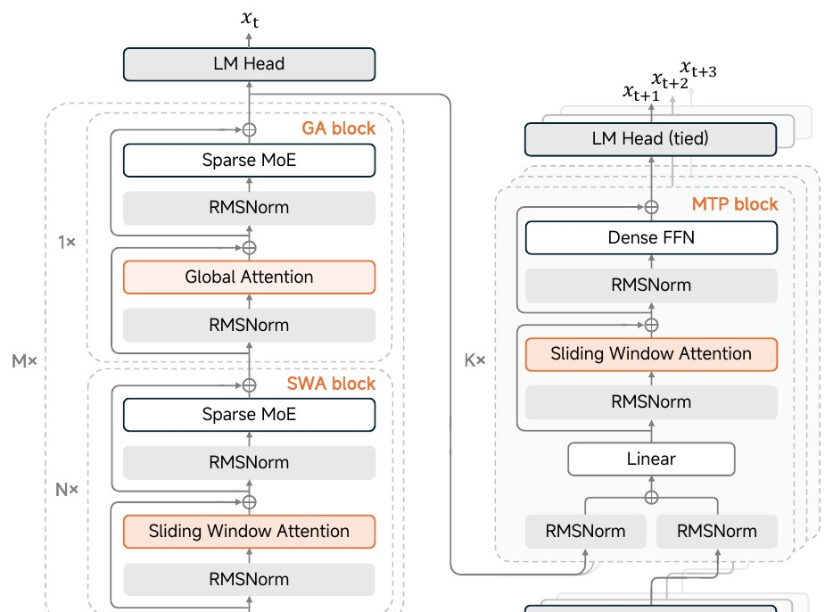
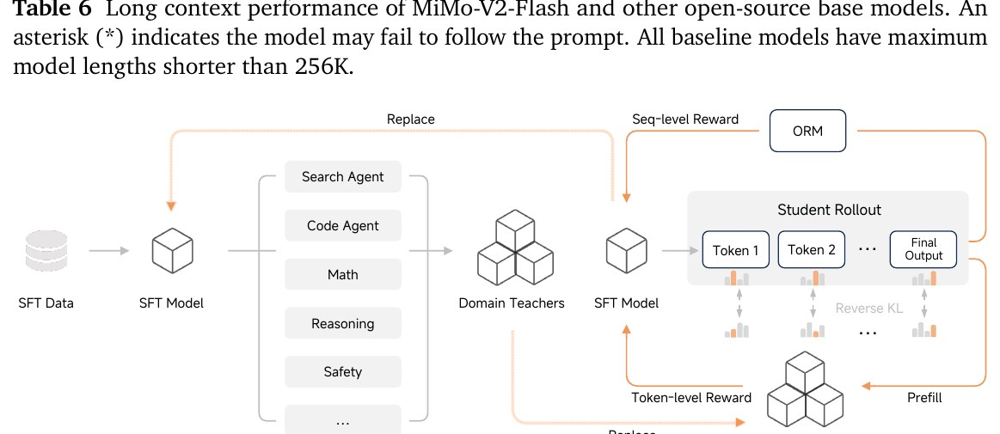
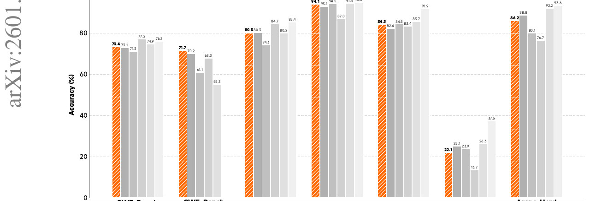
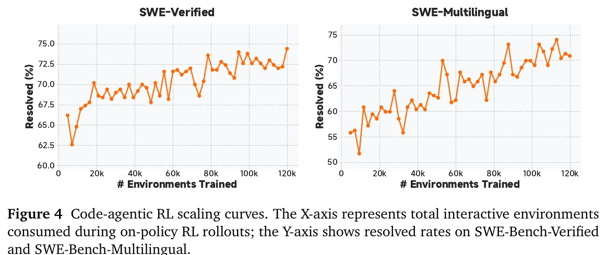
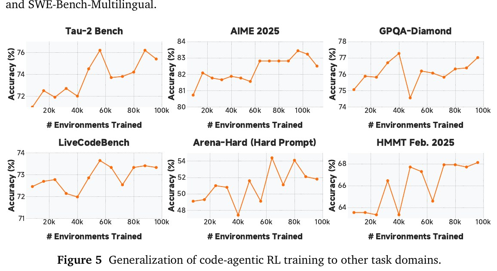

速览
五条要点
15B 激活打到开源第一梯队
SWE-Bench Verified 73.4（DeepSeek-V3.2 73.1、Kimi-K2 71.3），Multilingual 71.7（70.2 / 61.1）表 9。但 HMMT（84.4 vs 92.5）、Terminal Bench 2.0（38.5 vs 46.4）明显落后 DeepSeek-V3.2表 9。
128 滑窗 + sink 反超全局注意力
32B 稠密对照中，Hybrid SWA(W=128, sink) 推理平均 46.3 vs 42.4（All GA）表 4；不加 sink 则 MMLU 掉到 54.9（All GA 57.3）表 2。W=512 长上下文反而崩：NoLiMa 38.5 vs 51.2表 3。
MOPD：12 项里 8 项追平或超过最佳教师
AIME 2025 94.1（最佳教师 93.9），Arena-Hard Hard Prompt +4.1；但 BrowseComp −6.3、Creative Writing −3.9表 7。正文「保留所有领域最强教师的峰值」说得过满。
MTP 主打 RL rollout 提速
每个 MTP 块只有 0.33B（稠密 FFN + SWA）§2.1；3 层 MTP 在 16K 入 / 1K 出下解码加速 1.82×–2.70×，随接受长度线性涨表 10。接受长度与下一 token 熵拟合 R²=0.995图 7。
数据：agentic 环境写得细，预训练是黑箱
RL 侧给了任务数：Code 90K+30K、Search 150K、General 50K表 8；预训练 27T 只列来源类别，配比、过滤阈值原文未披露，唯一比例是 Stage 2 约 5% 合成推理数据§3.1。
架构：Hybrid Block + 轻量 MTP
标准 Transformer + MoE + 混合注意力§2.1。主干是 M=8 个 Hybrid Block，每块 N=5 个 SWA 块后接 1 个 GA 块；MTP 块挂在主干最后一层隐状态后面，用于投机解码。

关键配置
| 配置 | 主干 | MTP 块 |
|---|---|---|
| 层数（总 / SWA / GA） | 48 / 39 / 9 | – |
| SWA 头（Q / KV） | 64 / 8 | 64 / 8 |
| GA 头（Q / KV） | 64 / 4 | – |
| 滑窗大小 | 128 | 128 |
| 头维（QK / V） | 192 / 128 | 192 / 128 |
| 专家（总 / 激活） | 256 / 8 | 稠密 FFN |
| 参数 | 309B / 15B 激活 | 0.33B / 块 |
来源：表 1、§2.1、§3.2。其余：GQA；RoPE 只作用于 QK 前 64 维；hidden 4096，专家中间维 2048，稠密 FFN 中间维 16384；初始化标准差 0.006§2.1 · §3.2。
48 层排布 示意 · 推算
示意：8×(5+1)=48 层，若第 1 层由 SWA 改为 GA，正好得到表 1 的 39 SWA / 9 GA 推算。原文只写「第一个块是 GA + 稠密 FFN」，没有逐层画出。
相对同类的改动
- 更激进的滑窗：W=128、SWA:GA=5:1。作者引 Gemma 3 指出窗口过小或比例过高通常会掉点，尤其是长上下文§2.2；这里靠 sink 把下限压低。
- 可学习 attention sink：照搬 gpt-oss 做法，每个头一个标量 sink 加到 softmax 分母里（公式 2–3），允许某个 query「几乎不看」任何 token§2.2。
- GA 用更少 KV 头：SWA 64/8，GA 64/4表 1。
- MoE 无共享专家，256 选 8；第 1 层用稠密 FFN「稳定早期表示学习」§2.1。
- 精度：FP8 混合精度（类似 DeepSeek-V3），注意力输出投影、embedding、输出头保留 BF16，MoE router 用 FP32§2.1。
- MTP 轻量化：预训练只挂 1 个 MTP 头；后训练复制成 K 个头联合训练多步预测，每个头输入主模型隐状态 + token embedding§2.3.2。3 层 MTP 合计约 1B 推算。
架构对照实验（32B 稠密，非正式模型）
四种变体同一流程：8,192 长度预训练 250B token → 32,768 长度扩展 40B token → 长上下文 SFT + 推理 SFT§2.2.1。
| 变体 | MMLU | BBH | GSM8K | MATH | GSM-Inf. | NoLiMa | RULER-32k | MRCR | 推理平均 |
|---|---|---|---|---|---|---|---|---|---|
| All GA | 57.3 | 54.7 | 34.2 | 9.5 | 12.3 | 49.7 | 89.4 | 32.5 | 42.4 |
| SWA W=128，无 sink | 54.9 | 52.4 | 36.9 | 8.9 | – | – | – | – | – |
| SWA W=128，有 sink | 58.3 | 56.1 | 36.9 | 10.3 | 17.3 | 51.2 | 89.4 | 34.4 | 46.3 |
| SWA W=512，有 sink | 58.3 | 54.9 | 37.9 | 10.0 | 17.2 | 38.5 | 84.7 | 19.6 | – |
来源：表 2（通用，base 未扩长）、表 3（长上下文）、表 4（AIME24/25、LiveCodeBench、GPQA-Diamond 的平均）。「–」= 原表未报告。GSM-Infinite 与 NoLiMa 为作者自建的内部 few-shot 版本§2.2.1。完整列（TriviaQA / CMMLU / MBPP、推理三项）见下。
表 2 / 表 4 其余列展开
| 变体 | TriviaQA | CMMLU | MBPP | AIME24/25 | LiveCodeBench | GPQA-D |
|---|---|---|---|---|---|---|
| All GA | 53.2 | 50.3 | 54.7 | 45.5 | 40.0 | 41.7 |
| SWA W=128，无 sink | 52.8 | – | – | – | – | – |
| SWA W=128，有 sink | 53.7 | 53.3 | 56.3 | 47.1 | 43.9 | 48.1 |
| SWA W=512，有 sink | 54.9 | 52.3 | 53.2 | – | – | – |
作者的解释是假设而非证明：小窗口迫使 SWA 只管局部、长依赖交给 GA，分工更清晰，并起到正则作用；W=512 会让 SWA 部分承担长依赖，模糊分工§2.2.2。作者也强调结论依赖其模型规模、数据和流程。
数据：预训练写类别，RL 环境写到流水线
预训练数据处理「大体沿用 MiMo-7B」，本篇只写了相对它的偏移§3。后训练里 agentic 环境的构建写得最细，这也是本篇对数据工程最有参考价值的部分。
预训练三阶段的 token 划分
阶段边界来自 §3.1；百分比按 22/27、4/27、1/27 自算 推算。这是阶段长度，不是数据来源配比；来源配比原文未披露。
已披露规模
| 项目 | 原文给出的内容 | 来源 |
|---|---|---|
| 预训练总量 | 27T tokens | §3 |
| 预训练来源配比 | 原文未披露（只列了来源类别，故不画配比条） | – |
| 合成数据比例 | Stage 2 加入约 5% 合成推理数据；其他阶段原文未披露 | §3.1 |
| 清洗 / 去重 / 质量过滤 | 「大体沿用 MiMo-7B」，本篇无细节原文未披露 | §3 |
| SFT 样本 | 「数百万」条，覆盖 thinking / non-thinking | §4.2 |
| Code Agent | 90K（真实环境 + 真实 prompt）+ 30K（真实环境 + 合成 prompt） | 表 8 |
| Search Agent | 150K（真实环境 + 合成 prompt） | 表 8 |
| General Agent | 50K（合成环境 + 合成 prompt） | 表 8 |
| Terminal Agent | 约 30,000 条已验证 query（与表 8 中哪一行对应，原文未说明） | §4.3.2 |
| Web Dev 数据量 | 只说「大规模」，8 类网页；条数原文未披露 | §4.3.2 |
| Code Agent RL 实际消耗 | 约 120K 个环境的 on-policy rollout | §4.3.2 · 图 4 |
| MOPD prompt 分布、教师数量 | 原文未披露（图 3 列出 Search Agent / Code Agent / Math / Reasoning / Safety / …） | 图 3 |
Caption / 标注怎么做的
这是一篇纯文本 LLM，不涉及图像 caption。和「标注」最接近的有三处：
- SFT 回复是模型标注：由内部领域专用 checkpoint 生成，不是人写§4.2。
- 主观任务的奖励靠 rubric：高级 LLM judge 对照细化 rubric 和参考答案给细粒度奖励§4.3.1。
- Web Dev 的「标注者」是视觉模型：判别器看渲染视频筛数据，verifier 看 rollout 录屏同时评视觉质量、功能正确性和可执行性；作者称视频评估比静态截图更少视觉幻觉§4.3.2（无量化数字）。
防奖励作弊：清理环境里的「答案」 附录 B
官方 SWE-Bench 镜像里的 ground-truth commit 没删干净，RL 中模型会去偷看未来 commit。作者统计 rollout 里 git log --all 等关键词次数来量化「git hack」，评测换用最新镜像，自建训练镜像按官方方案修复附录 B。注意：演示曲线（图 8）是在 Qwen3-32B 上跑的，不是 MiMo-V2-Flash。
训练配方
预训练超参给得很全；后训练只给了 SFT 超参，RL / MOPD 的学习率、batch、步数、α原文未披露。
预训练 · 0–22T
- 长度
- 32,768
- LR
- 50B warm-up → 3.2e-4 恒定 12T → cos 至 1.0e-4（10T）
- RoPE
- GA 640K · SWA 10K
- MTP 权重
- 0.3
Mid-training · 22–26T
- 数据
- 上采样代码 + 约 5% 合成推理
- LR
- 1.0e-4 → cos 3.0e-5（4T）
- MTP 权重
- 0.1
长上下文扩展 · 26–27T
- 长度
- 262,144
- LR
- 3.0e-5 → cos 1.0e-5
- RoPE
- GA 调到 5,000,000
- batch
- 256
- 专家 bias
- 更新因子 1.0e-5
来源：§3.1、§3.2。共享设置：AdamW β₁=0.9、β₂=0.95、wd 0.1、梯度裁剪 1.0；batch 在前 500B token 线性升到 2,048 后保持（Stage 1–2）；MoE 序列辅助损失 1.0e-5；专家 bias 更新因子 Stage 1–2 为 0.001。进度条为该阶段 token 占 27T 的比例 推算。
后训练：三段式 MOPD

通用 SFT
- 数百万条，thinking + non-thinking§4.2
- LR cos 5.0e-5 → 5.0e-6，batch 128§4.2
- AdamW ε=1.0e-8；专家 bias 更新 1.0e-4；辅助损失 1.0e-6§4.2
- 监控 num-zeros（零梯度参数数）：上升=专家负载变差，下降=过拟合§4.2
领域教师
- 各领域独立 RL（或 SFT）训练教师：search、coding、通用工具、数学、通用推理、安全§4.1
- 教师可以是 RL 模型、另一 SFT 模型，甚至学生自己§4.1
- Code Agent RL 跑了约 120K 环境，并泛化到数学 / 代码 / 通用推理图 4 · 图 5
MOPD
- 学生在推理引擎上自采样，按 prompt 所属领域选教师§4.4
- token 级优势 = sg[log πteacher/πθ]（反向 KL）式 8
- 训推重要性采样，偏差过大的 token 权重置 0（εlow/εhigh）式 7–8
- 最终优势再加 α·ÂORM（如 GRPO）式 9；α、ε 取值原文未披露
RL 基础设施 §4.6
- SGLang 推理 + Megatron-LM 训练，训推都用 FP8。
- R3（Rollout Routing Replay）：训练时复用 rollout 选中的专家，解决 MoE 训推路由不一致；作者前作。
- 请求级 prefix cache：多轮 agent 中缓存前几轮 KV 和路由结果，不跨请求共享，保证路由一致。
- Data Scheduler：以序列而非 micro-batch 调度；按历史 pass rate 动态采样；partial rollout + staleness-aware 截断重要性采样。
- Toolbox / Tool Manager：基于 Ray 的工具资源池，配额 + QPS 限制，环境预热、序列级异步奖励。
MOPD vs 只用 ORM 图 6
在 AIME 2025 和 LiveCodeBench 上比较三条训练曲线：RL+ORM、MOPD 去掉 ORM、MOPD。作者称 MOPD 保留并合并多个教师能力，多数领域追平或超过最强教师§4.4。
只覆盖 2 个基准、约 50 步；图 6 本页未收录原图，具体数值请看原文。
推理时上下文管理 附录 C
上下文占用超过阈值（低至 30%）就让模型自我总结、把完整历史存成可检索文件；Deep Research 类任务提升 5–10%，BrowseComp 由 45.4 升到 58.3附录 C · 表 9。
评测
后训练模型对比 Kimi-K2 Thinking、DeepSeek-V3.2 Thinking（开源）和 Gemini-3.0 Pro、Claude Sonnet 4.5、GPT-5 High（闭源）表 9。原文没说明基线分数是自测还是引用。τ²-Bench 用 DeepSeek-V3.2 做 user agent§4.5.2。

后训练模型（表 9 全表）
| 基准 | MiMo-V2 Flash | Kimi-K2 Thinking | DeepSeek-V3.2 Thinking | Gemini-3.0 Pro | Claude Sonnet 4.5 | GPT-5 High |
|---|---|---|---|---|---|---|
| Reasoning | ||||||
| MMLU-Pro | 84.9 | 84.6 | 85.0 | 90.1 | 88.2 | 87.5 |
| GPQA-Diamond | 84.3 | 84.5 | 82.4 | 91.9 | 83.4 | 85.7 |
| HLE (no tools) | 22.1 | 23.9 | 25.1 | 37.5 | 13.7 | 26.3 |
| AIME 2025 | 94.1 | 94.5 | 93.1 | 95.0 | 87.0 | 94.6 |
| HMMT Feb. 2025 | 84.4 | 89.4 | 92.5 | 97.5 | 79.2 | 88.3 |
| LiveCodeBench-v6 | 85.1 | 83.1 | 83.3 | 90.7 | 64.0 | 84.5 |
| General Writing | ||||||
| Arena-Hard (Hard Prompt) | 54.1 | 71.9 | 53.4 | 72.6 | 63.3 | 71.9 |
| Arena-Hard (Creative Writing) | 86.2 | 80.1 | 88.8 | 93.6 | 76.7 | 92.2 |
| Long Context | ||||||
| LongBench V2 | 60.6 | 48.1 | 58.4 | 65.6 | 61.8 | – |
| MRCR | 45.7 | 44.2 | 55.5 | 89.7 | 55.4 | – |
| Code Agent | ||||||
| SWE-Bench Verified | 73.4 | 71.3 | 73.1 | 76.2 | 77.2 | 74.9 |
| SWE-Bench Multilingual | 71.7 | 61.1 | 70.2 | – | 68.0 | 55.3 |
| Terminal-Bench Hard | 30.5 | 30.6 | 35.4 | 39.0 | 33.3 | 30.5 |
| Terminal Bench 2.0 | 38.5 | 35.7 | 46.4 | 54.2 | 42.8 | 35.2 |
| General Agent | ||||||
| BrowseComp | 45.4 | – | 51.4 | – | 24.1 | 54.9 |
| BrowseComp (w/ Context Manage) | 58.3 | 60.2 | 67.6 | 59.2 | – | – |
| τ²-Bench | 80.3 | 74.3 | 80.3 | 85.4 | 84.7 | 80.2 |
「BrowseComp (w/ Context Manage)」各家用的上下文管理方法不一定相同，MiMo 的 58.3 来自附录 C 的方法（复刻 DeepSeek 的激进重置）附录 C，不宜横比。MRCR 为 {2,4,8}-needle、最长 128K§4.5.1。
MOPD：学生 vs 最佳教师（表 7）
标签后缀为最佳教师类型（RL / SFT / Self = 学生自己），数值为「Δ · MOPD 后学生分」。紫色为追平或超过，橙色为低于最佳教师。
表 7 原始数值展开
| 基准 | MOPD 前学生 | 最佳教师 | MOPD 后学生 | Δ |
|---|---|---|---|---|
| AIME 2025 | 89.3 | 93.9 (RL) | 94.1 | +0.2 |
| HMMT Feb. 2025 | 76.9 | 82.6 (RL) | 84.4 | +1.8 |
| LiveCodeBench | 77.5 | 82.6 (RL) | 83.2 | +0.6 |
| MMLU-Pro | 84.7 | 84.7 (Self) | 84.9 | +0.2 |
| GPQA-Diamond | 84.9 | 84.9 (Self) | 84.3 | −0.6 |
| HLE (w/o Tool) | 21.2 | 21.2 (Self) | 22.1 | +0.9 |
| Arena-Hard (Hard Prompt) | 50.0 | 50.0 (Self) | 54.1 | +4.1 |
| Arena-Hard (Creative Writing) | 90.1 | 90.1 (Self) | 86.2 | −3.9 |
| SWE-Bench Verified | 67.8 | 74.2 (RL) | 73.4 | −0.8 |
| Tau2-Bench | 75.9 | 79.6 (RL) | 80.3 | +0.7 |
| Tau2-Bench (Telecom) | 92.7 | 95.0 (RL) | 95.3 | +0.3 |
| BrowseComp | 42.5 | 51.7 (SFT) | 45.4 | −6.3 |
来源：表 7。注意表 7 的「LiveCodeBench」为 83.2，表 9 的「LiveCodeBench-v6」为 85.1，原文没有解释两者差别。
Base 模型与长上下文
| 基准 | MiMo-V2-Flash Base | Kimi-K2 Base | DeepSeek-V3.1 Base | DeepSeek-V3.2 Exp Base |
|---|---|---|---|---|
| 激活 / 总参 | 15B / 309B | 32B / 1043B | 37B / 671B | 37B / 671B |
| MMLU-Pro（5-shot） | 73.2 | 69.2 | 58.8 | 62.1 |
| GPQA-Diamond（5-shot） | 55.1 | 48.1 | 51.0 | 52.0 |
| AIME 24&25（2-shot） | 35.3 | 31.6 | 21.6 | 24.8 |
| SWE-Bench AgentLess（3-shot） | 30.8 | 28.2 | 24.8 | 9.4* |
| SimpleQA（5-shot） | 20.6 | 35.3 | 26.3 | 27.0 |
| C-SimpleQA（5-shot） | 61.5 | 77.6 | 70.9 | 68.0 |
| 长上下文（表 6） | ||||
| NIAH-Multi 32K / 128K | 99.3 / 98.6 | 99.8 / 99.5 | 99.7 / 97.2 | 85.6* / 94.3* |
| NIAH-Multi 256K | 96.7 | – | – | – |
| GSM-Infinite Hard 16K | 37.7 | 34.6 | 41.5 | 50.4 |
| GSM-Infinite Hard 128K | 29.0 | 8.8 | 28.7 | 25.7 |
来源：表 5、表 6。* 表 5：模型没有遵循 few-shot 示例格式；表 6：模型可能没遵循 prompt——所以 DeepSeek-V3.2-Exp Base 的 SWE-Bench 9.4 不代表能力。表 6 的「–」：基线最大长度都不足 256K。GSM-Infinite 从 16K 到 128K，MiMo 掉 8.7 分，DeepSeek-V3.2-Exp 掉 24.7 分 推算。
表 5 全部基准展开
| 基准 | Shots | MiMo-V2-Flash | Kimi-K2 | DS-V3.1 | DS-V3.2-Exp |
|---|---|---|---|---|---|
| General | |||||
| BBH | 3 | 88.5 | 88.7 | 88.2 | 88.7 |
| MMLU | 5 | 86.7 | 87.8 | 87.4 | 87.8 |
| MMLU-Redux | 5 | 90.6 | 90.2 | 90.0 | 90.4 |
| MMLU-Pro | 5 | 73.2 | 69.2 | 58.8 | 62.1 |
| DROP | 3 | 84.7 | 83.6 | 86.3 | 86.6 |
| ARC-Challenge | 25 | 95.9 | 96.2 | 95.6 | 95.5 |
| HellaSwag | 10 | 88.5 | 94.6 | 89.2 | 89.4 |
| WinoGrande | 5 | 83.8 | 85.3 | 85.9 | 85.6 |
| TriviaQA | 5 | 80.3 | 85.1 | 83.5 | 83.9 |
| GPQA-Diamond | 5 | 55.1 | 48.1 | 51.0 | 52.0 |
| SuperGPQA | 5 | 41.1 | 44.7 | 42.3 | 43.6 |
| SimpleQA | 5 | 20.6 | 35.3 | 26.3 | 27.0 |
| Mathematics | |||||
| GSM8K | 8 | 92.3 | 92.1 | 91.4 | 91.1 |
| MATH | 4 | 71.0 | 70.2 | 62.6 | 62.5 |
| AIME 24&25 | 2 | 35.3 | 31.6 | 21.6 | 24.8 |
| Code | |||||
| HumanEval+ | 1 | 70.7 | 84.8 | 64.6 | 67.7 |
| MBPP+ | 3 | 71.4 | 73.8 | 72.2 | 69.8 |
| CRUXEval-I | 1 | 67.5 | 74.0 | 62.1 | 63.9 |
| CRUXEval-O | 1 | 79.1 | 83.5 | 76.4 | 74.9 |
| MultiPL-E HumanEval | 0 | 59.5 | 60.5 | 45.9 | 45.7 |
| MultiPL-E MBPP | 0 | 56.7 | 58.8 | 52.5 | 50.6 |
| BigCodeBench | 0 | 70.1 | 61.7 | 63.0 | 62.9 |
| LiveCodeBench v6 | 1 | 30.8 | 26.3 | 24.8 | 24.9 |
| SWE-Bench (AgentLess Repair) | 3 | 30.8 | 28.2 | 24.8 | 9.4* |
| Chinese / Multilingual | |||||
| C-Eval | 5 | 87.9 | 92.5 | 90.0 | 91.0 |
| CMMLU | 5 | 87.4 | 90.9 | 88.8 | 88.9 |
| C-SimpleQA | 5 | 61.5 | 77.6 | 70.9 | 68.0 |
| GlobalMMLU | 5 | 76.6 | 80.7 | 81.9 | 82.0 |
| INCLUDE | 5 | 71.4 | 75.3 | 77.2 | 77.2 |
来源：表 5。作者自己承认知识容量受参数量限制，SimpleQA 偏低§3.3.2。
MTP 加速（表 10）
| batch / 节点 | 无 MTP | 接受 2.8 | 3.0 | 3.2 | 3.4 | 3.6 | 3.8 |
|---|---|---|---|---|---|---|---|
| 32 | 1.00× | 1.86× | 1.99× | 2.12× | 2.25× | 2.39× | 2.52× |
| 48 | 1.00× | 1.82× | 1.95× | 2.08× | 2.21× | 2.34× | 2.47× |
| 64 | 1.00× | 1.97× | 2.11× | 2.25× | 2.39× | 2.53× | 2.67× |
| 96 | 1.00× | 1.99× | 2.13× | 2.28× | 2.42× | 2.56× | 2.70× |
| 128 | 1.00× | 1.82× | 1.94× | 2.07× | 2.20× | 2.33× | 2.46× |
来源：表 10，3 层 MTP，16K 输入 / 1K 输出。实测接受长度最高约 3.6（WebDev），MMLU-Pro、GPQA 等高熵任务更短图 7 · §5.1；3.8 列超过了图 7 的实测范围。摘要「最高 2.6×」与 3.6 列的 2.53–2.56× 对得上 推算。
新在哪
混合 SWA/GA（Gemma、gpt-oss 等）、attention sink（gpt-oss）、MTP（DeepSeek-V3、MiMo-7B）、FP8 训练、on-policy 蒸馏（Agarwal 2023、Thinking Machines）都是已有做法，不单独算新点。
把滑窗压到 128、比例 5:1，且对照实验显示不输全局注意力
32B 对照里 W=128 + sink 在通用、长上下文、推理上都追平或超过 All GA，而 W=512 在长上下文明显掉点表 2–4。「窗口越小越好」这个反直觉结论是本篇最可核对的架构发现。
可核对：表 2–4。只在 32B 稠密、250B+40B token 上做，没有在 309B MoE 上复验；5:1 比例本身没有消融。
MOPD：按领域路由的多教师 on-policy 蒸馏 + ORM 优势
按 prompt 所属领域选教师，教师给 token 级反向 KL 优势，再加 α·ÂORM；训推重要性采样并丢弃偏差大的 token式 5–9。把「多个专家模型合一」从参数合并 / 离线蒸馏换成在线 RL 过程§4.1。
可核对：表 7 逐项给出学生 / 最佳教师 / 学生后。缺：与参数合并、离线多教师蒸馏的直接对照；α 未披露。
为 RL rollout 设计的轻量 MTP
MTP 块用稠密 FFN + SWA，仅 0.33B，预训练 1 头、后训练扩到 K 头§2.3.2；作者明确把 MTP 定位为小 batch on-policy RL 与长尾 straggler 的加速器§2.3.1，并给出接受长度 ≈ 4(1−0.58x0.58)（x 为下一 token 熵）的经验拟合图 7。
可核对：表 10 加速比。RL 训练中实际省了多少时间原文未披露。
用录屏视频 + 视觉 verifier 给 Web Dev 打奖励
Playwright 把生成页面跑成视频，多模态判别器筛数据、视觉 verifier 同时评视觉质量 / 功能正确性 / 可执行性§4.3.2。
可核对：只有描述，没有 verifier 的准确率、与截图方案的对比数字，也没有 Web Dev 单项评测。
SFT 稳定性指标 num-zeros
把「零梯度参数个数」当作 MoE SFT 的早期预警：上升=负载失衡，下降=过拟合；并指出它主要受专家 bias 更新率和 AdamW ε 影响§4.2。
可核对：只有定性描述和最终超参，没有曲线。
对图像编辑数据、评测、caption 的启示
MiMo-V2-Flash 是纯文本 LLM，但它的 agentic 数据工程（环境构建、难度控制、视觉 verifier、防作弊）和后训练组织方式，与编辑模型的数据 / 奖励问题同构。每条先写论文怎么做，再给一条迁移建议（不是论文内容）。
D1从成品反推指令
论文：收集高质量用户网页，从页面反推用户 query 作种子，再扩成覆盖 8 类网页的 RL 数据§4.3.2。
迁移建议，不是论文内容：先攒一批人工确认过的高质量 (src, tgt) 对，用 VLM 从这对图反推编辑指令作种子，再按编辑类别扩写；类别清单先对齐线上真实请求分布，避免合成指令只覆盖模型擅长的类型。
D2按 pass rate 去掉「判不准」和「太简单」
论文：Terminal 任务先验证环境能装、按难度与可靠性过滤，再按 pass rate 去掉判对不可靠或复杂度不够的任务，得到约 3 万条§4.3.2；Data Scheduler 也按历史 pass rate 动态采样§4.6.2。
迁移建议，不是论文内容：编辑 RL 的 prompt 池先用当前模型每条采 N 张，用 VLM 裁判打分：全过的降权，全挂的单独复核；同一张图多次判分不一致的 prompt 直接移出训练池，留给人工标注。
D3用结构参数控制难度
论文：Search 题从种子实体递归扩展事实图，难度由关系链深度和细节模糊化控制；函数调用环境按显式 / 隐式依赖生成工具调用图§4.3.2。
迁移建议，不是论文内容：合成多步编辑指令时，把难度拆成可调参数：操作数（1–4 个）、指代方式（直呼「杯子」 vs 「桌子左边那个东西」）、操作间依赖（先移再改色）。每条样本记下这些参数，评测按参数分桶报分。
D4后期阶段上采样难数据，比例写明
论文：预训练后段（22–26T）上采样代码并加入约 5% 合成推理数据，最后 1T 上采样长依赖数据§3.1。
迁移建议，不是论文内容：编辑预训练也可以把多操作、文字编辑、强保持约束这类难样本集中放到后段上采样，并像这里一样写明合成数据占比，方便日后对照实验；不要只给一个「高质量数据」的笼统描述。
E1程序化检查 + LLM judge 混合，主观项用 rubric
论文：可验证任务用程序化工具 + LLM judge 混合验证；helpfulness / safety 由 LLM judge 对照细化 rubric 和参考答案打分§4.3.1。
迁移建议，不是论文内容：编辑评测里能程序化的先程序化：编辑区外的像素 / 感知差异、文字编辑的 OCR 比对、尺寸与长宽比；指令遵循和审美再交给 VLM，并给 VLM 一份逐项 rubric 和一张参考结果，而不是只问「好不好」。
E2看「渲染后的成品」，多维分开打
论文：Web Dev verifier 看 rollout 的录屏视频，同时评视觉质量、功能正确性、可执行性；作者称视频比静态截图更少视觉幻觉§4.3.2。
迁移建议，不是论文内容：VLM 判编辑结果时，除了整图，再给编辑区域的放大裁剪和 src/tgt 并排图，减少裁判漏看小改动；指令遵循、非编辑区保持、画质三项分开打分、分开报，不要先合成一个总分。
E3查环境里有没有「答案泄露」
论文：官方 SWE-Bench 镜像残留 ground-truth commit，模型在 RL 中学会偷看；作者用关键词计数监控 git hack，并换镜像修复附录 B。
迁移建议，不是论文内容：编辑 RL / 评测要查泄露通道：指令是否由 tgt 的 caption 直接改写（含 tgt 才有的细节）、文件名或元数据带标签、VLM 裁判 prompt 里带了参考答案的措辞。训练中持续统计「输出与参考图近重复」的比例，突增就报警。
E4退步项照样报，裁判版本写明
论文：表 7 把 BrowseComp −6.3、Creative Writing −3.9 都列出；τ²-Bench 写明 user agent 是 DeepSeek-V3.2表 7 · §4.5.2。
迁移建议，不是论文内容：合并多个编辑专项模型后，按类别逐项列「合并前最佳 / 合并后」和差值，退步项不删；评测报告固定写出 VLM 裁判的模型名、版本和 prompt 哈希，换裁判就重跑基线。
C1领域专用模型产出标注
论文：SFT 的回复由内部领域专用 checkpoint 生成，并同时覆盖 thinking / non-thinking 两种模式§4.2。
迁移建议，不是论文内容：caption 不必只用一个通用 VLM：人像、文字海报、商品、场景各用一个调过的 captioner，再统一成同一 schema；同一张图同时产出长 caption 和短指令两种粒度，训练时随机取其一，对应长短两种用户输入。
C2多个专项教师合进一个学生
论文：MOPD 按 prompt 领域选教师，学生在自己的采样上接受 token 级蒸馏 + 结果奖励；多数项追平最佳教师，但个别项退步§4.4 · 表 7。
迁移建议，不是论文内容：如果按编辑类别（消除、换背景、改文字、风格化）分别训了专项模型，合并时优先试「学生自采样 + 按类别路由的教师打分」而不是参数平均；对 caption 模型也一样，学生生成 caption，再按领域交给专项 captioner 评分作奖励。
C3多轮会话压缩成摘要
论文：上下文占用超过阈值（低至 30%）时让模型自我总结，完整历史存为可检索文件；Deep Research 类任务提升 5–10%附录 C。
迁移建议，不是论文内容：多轮编辑 agent 不必把每轮图和指令全部带上，可以在若干轮后把「当前图状态 + 已完成的修改清单 + 未完成的要求」压成一段结构化 caption 继续对话，历史图存档按需取回。
局限与存疑
- 预训练数据基本不可复现。27T 只列来源类别；配比、去重 / 质量过滤细节都推给 MiMo-7B，本篇唯一比例是 Stage 2 约 5% 合成推理数据§3 · §3.1。SFT 只说「数百万」，Web Dev 数据量、MOPD 的 prompt 分布与教师数量也未给。
- 架构结论只在小模型上验证。Hybrid SWA 对照用的是 32B 稠密模型、250B + 40B token，不是 309B MoE；5:1 比例、W 取 128 以下、GA 用 4 个 KV 头都没有消融。作者在结论里也承认架构探索「初步」§2.2.1 · §6。
- 正文对 MOPD 的说法比表格乐观。§4.1 说 MOPD「在所有领域保留最强教师的峰值表现」，但表 7 中 BrowseComp −6.3、Creative Writing −3.9、SWE-Bench Verified −0.8、GPQA −0.6表 7。图 6 的对照只有 2 个基准、约 50 步。
- 同名基准两处数字不同。表 7「LiveCodeBench」83.2，表 9「LiveCodeBench-v6」85.1；评测设置里写的是 LiveCodeBench（2024.08–2025.04）§4.5.1，三处口径没有对齐说明。
- 「比肩 DeepSeek-V3.2 / Kimi-K2」要看项目。代码 agent 领先，但 HMMT（84.4 vs 92.5 / 89.4）、Arena-Hard Hard Prompt（54.1 vs Kimi 71.9）、Terminal Bench 2.0（38.5 vs 46.4）、MRCR（45.7 vs 55.5）、BrowseComp 落后表 9。
- 评测可比性。没说明基线是自测还是引用；BrowseComp w/ Context Manage 各家方法不同；τ²-Bench 用 DeepSeek-V3.2 当 user agent§4.5.2。架构实验里的 GSM-Infinite 与 NoLiMa 是内部 few-shot 版本，外部无法复现§2.2.1。
- Base 对比里有格式失败项。DeepSeek-V3.2-Exp Base 的 SWE-Bench 9.4、NIAH 85.6 / 85.9 / 94.3 都标了 *（未遵循格式 / prompt）表 5 · 表 6，在这些项上的领先意义有限。
- 防作弊证据来自别的模型。附录 B 的 git hack 曲线是在 Qwen3-32B 上做的；对 MiMo-V2-Flash 只说「反复确认没有 reward hacking」，没给数字附录 B。
- 算力与 RL 超参缺失。训练 GPU / 卡时、RL 与 MOPD 的学习率、batch、步数、α、εlow/εhigh 均未给原文未披露；许可证原文也未写。
图表索引
| 编号 | 内容 | 本页位置 |
|---|---|---|
| 图 1 | 七项基准与 5 个对照模型的柱状图（第 1 页）· figures/fig1.jpg | 评测 |
| 图 2 | 模型结构：Hybrid Block（SWA / GA）+ MTP 块（第 5 页）· figures/fig2.jpg | 架构 |
| 图 3 | 后训练三阶段与 MOPD（第 13 页）· figures/fig3.jpg | 训练 |
| 图 4 | Code agent RL 扩展曲线（SWE-Bench Verified / Multilingual vs 训练环境数）· figures/fig4.jpg | 下方 |
| 图 5 | Code agent RL 向其他任务的泛化（6 个基准）· figures/fig5.jpg | 下方 |
| 图 6 | ORM / MOPD w/o ORM / MOPD 训练曲线（AIME 2025、LiveCodeBench）· 未裁图，文字引用 | 训练 |
| 图 7 | 下一 token 熵 vs MTP 接受长度 · 未裁图，文字引用 | 评测 |
| 图 8 | 附录 B：Qwen3-32B 上的 git hack 次数 · 未裁图，文字引用 | 数据 |
| 表 1 | 模型配置 | 架构 |
| 表 2–4 | 32B 注意力变体对照（通用 / 长上下文 / 推理） | 架构 |
| 表 5 | Base 模型对比 | 评测 |
| 表 6 | Base 长上下文（NIAH-Multi、GSM-Infinite Hard） | 评测 |
| 表 7 | MOPD 前后与最佳教师 | 评测 |
| 表 8 | Agentic RL 任务构成 | 数据 |
| 表 9 | 后训练模型与开源 / 闭源对比 | 评测 |
| 表 10 | 3 层 MTP 解码加速 | 评测 |

